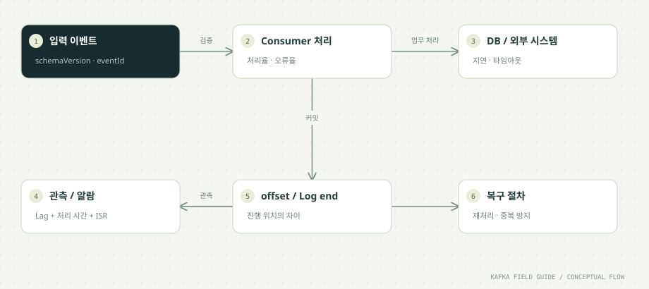

이 단원을 마치면
- Lag을 처리 시간과 구분해 해석한다
- 추가 필드와 호환 불가 변경을 구분한다
- 장애·중복·복구를 포함한 완료 기준을 만든다
- 운영 지표와 보안 구성 요소의 출발점을 정리한다
01 / UNDERSTAND먼저, 원리를 이해합니다.
Lag은 시간 그 자체가 아닙니다
이 실습의 inspect 명령은 파티션마다 log end offset(다음에 기록될 위치)과 그룹의 committed offset(다음에 읽을 위치)을 비교합니다.
Lag = log end offset − committed offsetLag은 '아직 커밋되지 않은 레코드 수'에 가까운 값이지 '몇 초 늦었다'는 뜻이 아닙니다. 해석할 때 주의할 점이 세 가지 있습니다.
- 커밋 시점에 따라 달라집니다: 처리는 끝났지만 아직 커밋하지 않은 레코드도 Lag에 포함됩니다. 배치 단위로 커밋하는 Consumer는 Lag이 톱니 모양으로 오르내립니다.
- 업무 메시지 수와 다를 수 있습니다: 09단원에서 본 트랜잭션 마커와 abort된 레코드도 offset을 차지합니다.
- 커밋 기록이 없는 파티션은 계산되지 않습니다: 이 실습의
inspect는 커밋된 파티션만 조회합니다. 그룹이 아직 한 번도 커밋하지 않았다면NO_COMMITTED_OFFSETS가 나오며, 이는 Lag이 0이라는 증거가 아닙니다.
실제 지연 시간은 따로 잽니다. 이벤트 안의 발생 시각(occurredAt)과 처리 완료 시각의 차이를 Consumer가 직접 기록하는 것이 가장 정확합니다.
지표는 원인과 함께 봅니다
Lag이 늘어난다는 사실만으로는 원인을 알 수 없습니다. 같은 증상도 원인이 여러 가지라서, 다른 지표를 함께 봐야 범위가 좁혀집니다.
- 입력이 갑자기 늘었는가: 토픽의 유입 속도가 평소보다 높다면 Consumer는 정상인데 일이 많은 것입니다. 파티션 수 안에서 Consumer를 늘리는 것이 대응입니다.
- 처리 속도가 떨어졌는가: 유입은 그대로인데 처리율이 낮아졌다면 DB나 외부 API가 느려졌을 가능성이 큽니다. Consumer를 늘려도 DB가 병목이면 소용없습니다.
- 특정 파티션만 밀리는가: 한 파티션의 Lag만 크다면 특정 key에 이벤트가 몰렸거나(02단원의 쏠림), 그 파티션을 맡은 Consumer가 멈췄을 수 있습니다.
- 리밸런싱이 반복되는가: Consumer가
max.poll.interval.ms안에 poll하지 못해 그룹에서 계속 빠졌다 들어오면, 처리보다 재배정에 시간을 쓰느라 Lag이 늘어납니다(03단원). - 재시도와 DLT가 폭증했는가: 07단원의 재시도가 대기 시간을 늘리고 있을 수 있습니다.
브로커 쪽에서는 ISR 축소, 디스크 사용량, 요청 지연을, 애플리케이션 쪽에서는 처리율, 오류율, outbox 대기 시간(10단원)을 함께 봅니다. 숫자 하나로 장애를 판정하지 않는다는 원칙이 운영의 출발점입니다.
스키마는 서비스 간 계약입니다
이벤트를 발행하는 순간, 그 형식은 내가 모르는 여러 Consumer와의 약속이 됩니다. 형식을 바꿀 때는 '이미 배포된 Consumer가 새 이벤트를 읽을 수 있는가', '새 Consumer가 과거 이벤트를 읽을 수 있는가'를 모두 따져야 합니다. Kafka에는 과거 이벤트가 보관 기간 동안 남아 있어, 새 코드도 옛 형식을 읽게 되기 때문입니다.
변경은 대체로 두 부류로 나뉩니다.
- 대개 호환되는 변경: 선택 필드를 추가하는 것입니다. 단, 읽는 쪽이 모르는 필드를 무시하도록 만들어져 있어야 합니다.
- 호환되지 않는 변경: 필수 필드 삭제, 필드 이름 변경, 타입 변경(문자열 → 숫자), 그리고 가장 위험한 의미나 단위의 변경(원 → 천 원)입니다. 단위 변경은 형식 검사로도 잡히지 않습니다.
이 실습의 OrderEvent.parse는 두 가지 규칙을 코드로 구현합니다. FAIL_ON_UNKNOWN_PROPERTIES=false로 모르는 선택 필드는 무시하고, schemaVersion이 1이 아니면 거부합니다. 이는 스키마 관리의 가장 단순한 형태이며 Schema Registry를 구현한 것은 아닙니다. Registry는 아래 '함께 알아둘 개념'과 부록 A2에서 다룹니다.
보안과 운영 경계도 설계합니다
학습용 compose.yaml은 편의를 위해 보안을 거의 쓰지 않습니다. 포트를 127.0.0.1에만 열고, 브로커와 클라이언트가 암호화도 인증도 없는 PLAINTEXT로 통신합니다. 운영 환경에서는 다음을 정해야 합니다.
- 암호화: TLS로 클라이언트와 브로커, 브로커끼리의 통신을 암호화합니다.
- 인증: SASL로 클라이언트가 누구인지 확인합니다. 메커니즘은 GSSAPI(Kerberos), PLAIN, SCRAM, OAUTHBEARER 등이 있습니다.
- 인가: ACL로 '누가 어떤 토픽에 쓰고 읽을 수 있는가'를 제한합니다. 예를 들어 주문 서비스만
orders에 쓰고, 통계 서비스는 읽기만 하게 합니다. - 비밀정보 관리: 비밀번호와 인증서를 코드나 저장소에 두지 않고 비밀 관리 도구로 주입합니다. 이 실습의
study-local-only같은 값은 로컬 학습 전용입니다.
데이터 자체도 살펴야 합니다. key나 payload에 개인정보를 그대로 넣으면 Kafka의 보관 기간 동안 여러 Consumer와 DLT, 로그 출력에까지 퍼집니다. 꼭 필요한 값만 담고, 디버그 로그에 레코드 전체를 출력하지 않도록 검토합니다.
최종 프로젝트의 완료는 복구로 판단합니다
'정상 입력이 정상 출력으로 나온다'는 시작일 뿐입니다. 이 과정에서 만든 파이프라인의 완료 기준은 장애를 만든 뒤에도 결과가 맞는가입니다. 최종 프로젝트 안내(실습/최종-프로젝트.md)는 다음 상황을 반드시 검증하게 합니다.
- Consumer 강제 종료: 처리 후 커밋 전에 죽어도 합계가 두 번 늘지 않습니다(05·06단원).
- 중복 발행: Relay가 같은 eventId를 두 번 보내도 결과는 한 번만 반영됩니다(10단원).
- 잘못된 데이터: 일시 오류는 재시도로 성공하고, 영구 오류는 DLT에 원본과 원인이 남습니다(07단원).
- 트랜잭션 abort:
read_committedConsumer에게 abort된 출력이 보이지 않습니다(09단원). - Broker 하나 중단: Leader가 바뀌고 ISR이 줄어도 쓰기가 계속되며, 복구 뒤 ISR이 회복됩니다(08단원).
verify 명령은 이 중 핵심 보장을 고유한 이름의 전용 토픽과 ID로 격리해 자동 검사하고, 자신이 만든 토픽·그룹·DB 행만 정리합니다. 다만 기능 보장을 확인할 뿐, 운영 부하·장시간 안정성·보안을 검증하지는 않습니다. 무엇을 확인했고 무엇을 확인하지 않았는지 구분해 말하는 것도 완료 기준의 일부입니다.
시간순으로 따라가기: 느린 Consumer와 빠른 입력
이 단원의 실습 명령을 순서대로 실행했을 때의 예시입니다. Lag 값은 토픽에 쌓인 데이터에 따라 달라집니다.
| 시점 | 일어나는 일 | inspect의 Lag 합계 (예시) | 해석 |
|---|---|---|---|
| 0초 | 터미널 A에서 새 그룹 lag-day12 Consumer가 시작합니다(레코드당 1초). | NO_COMMITTED_OFFSETS | 아직 커밋이 없습니다. Lag 0이 아니라 측정 불가입니다. |
| 10초 | 처음부터 읽으며 10건을 처리하고 건마다 커밋했습니다. | 파티션 0만 표시, 예: 120 | 커밋한 파티션만 보입니다. 나머지 파티션의 Lag은 아직 계산되지 않았습니다. |
| 15초 | 터미널 B에서 60건을 몇 초 만에 입력합니다. | 예: 175 | 입력 속도가 처리 속도(초당 1건)보다 훨씬 빠릅니다. |
| 60초 | Consumer는 계속 초당 1건씩 처리합니다. | 예: 130 | Lag은 줄지만 아주 천천히 줄어듭니다. |
| 60초 | 가장 오래된 미처리 이벤트의 occurredAt을 봅니다. | Lag 숫자와 별개 | 대기 시간은 계속 늘고 있습니다. 숫자보다 이 값이 사용자 체감에 가깝습니다. |
같은 Lag 숫자라도 처리 속도에 따라 의미가 완전히 달라집니다. 몇 번 반복해 실행하며 추세를 보세요.
증상으로 원인 좁히기
| 증상 | 함께 볼 지표 | 의심할 원인 | 먼저 해 볼 대응 |
|---|---|---|---|
| 모든 파티션의 Lag이 함께 증가 | 토픽 유입 속도, 그룹 처리율 | 입력 폭증 또는 처리 속도 저하 | 유입이 늘었으면 Consumer 추가(파티션 수 이내), 처리율이 떨어졌으면 DB·외부 API 점검 |
| 한 파티션의 Lag만 증가 | 파티션별 유입량, 담당 Consumer 상태 | 특정 key 쏠림, 멈춘 Consumer | key 분포 확인, 해당 Consumer의 로그와 스레드 상태 확인 |
| Lag이 들쭉날쭉하고 리밸런싱이 잦음 | 그룹 상태, Consumer 로그의 REVOKED/ASSIGNED | max.poll.interval.ms 초과, 불안정한 인스턴스 | 배치 크기(max.poll.records) 축소, 처리 시간 제한 |
| Lag은 작은데 사용자 체감 지연이 큼 | 종단 간 지연(발생 시각 → 처리 시각) | 느린 레코드, 수집 단계나 outbox의 지연 | 시간 기준 지표 추가, 앞단계(Relay, 수집기) 점검 |
| DLT 유입이 급증 | 오류 종류별 건수, 최근 배포 이력 | 스키마 변경, 하류 시스템 장애 | 배포 롤백 검토, 07단원의 재처리 절차 준비 |
| 쓰기 실패나 지연 증가 | ISR 크기, UnderReplicatedPartitions, 디스크 | 브로커 장애·과부하로 최소 ISR 미달 | 08단원의 브로커 복구, 디스크 여유 확보 |
처음부터 정답을 고르기보다, 표의 둘째 열을 확인해 가능성을 하나씩 지우는 방식으로 씁니다.
스키마 호환성 규칙 (Confluent Schema Registry 기준)
| 규칙 | 보장하는 것 | 대표적으로 허용되는 변경 | 먼저 배포할 쪽 |
|---|---|---|---|
BACKWARD (기본값) | 새 스키마를 쓰는 Consumer가 직전 스키마로 쓰인 데이터를 읽을 수 있음 | 선택 필드 추가, 필드 삭제 | Consumer |
BACKWARD_TRANSITIVE | 위와 같되 직전 버전이 아니라 모든 과거 버전과 비교 | 위와 같음 | Consumer |
FORWARD | 직전 스키마를 쓰는 Consumer가 새 스키마로 쓰인 데이터를 읽을 수 있음 | 필드 추가, 선택 필드 삭제 | Producer |
FORWARD_TRANSITIVE | 위와 같되 모든 과거 버전과 비교 | 위와 같음 | Producer |
FULL | 직전 버전과 양방향 호환 | 선택 필드의 추가·삭제만 | 어느 쪽이든 독립적으로 |
FULL_TRANSITIVE | 모든 과거 버전과 양방향 호환 | 위와 같음 | 어느 쪽이든 독립적으로 |
NONE | 검사하지 않음 | 모든 변경 | 양쪽을 조율해 함께 |
허용되는 변경의 세부 사항은 Avro, Protobuf, JSON Schema 등 형식과 기본값 유무에 따라 달라집니다. 이 실습은 Registry를 쓰지 않고 schemaVersion 검사로 비슷한 규칙을 단순하게 구현합니다.
한 걸음 더: 함께 알아둘 개념
기본 흐름을 이해했다면, 실무에서 곧바로 마주치는 관련 개념을 이어서 정리합니다.
시간 기준으로 지연을 재는 방법
offset 기준 Lag의 한계를 보완하려면 시간 기준 지표를 함께 둡니다. 방법은 여러 가지입니다.
- 종단 간 지연: Consumer가 처리를 마칠 때 '처리 완료 시각 − 이벤트의
occurredAt'을 지표로 기록합니다. 수집, Kafka, 처리 전 구간의 지연이 한 숫자에 담겨 사용자 체감과 가장 가깝습니다. - 가장 오래된 미처리 레코드의 나이: 다음에 처리할 레코드의 timestamp와 현재 시각의 차이입니다. Consumer가 완전히 멈춘 경우에도 값이 계속 커지므로 '멈춤'을 잘 잡아냅니다.
- 추정치: 'Lag ÷ 최근 처리율'로 따라잡는 데 걸릴 시간을 계산합니다. 간단하지만 처리율이 변하면 크게 빗나갑니다.
Consumer 클라이언트 자체도 지표를 냅니다. 예를 들어 records-lag-max는 그 Consumer가 맡은 파티션 중 가장 큰 Lag을 보여 줍니다. 그룹 전체를 바깥에서 보려면 부록 A1의 kafka-consumer-groups --describe나 Kafka UI의 Consumers 화면을 씁니다. 알람은 순간값보다 '일정 시간 이상 계속 증가'나 '시간 기준 지연이 임계값 초과'처럼 지속성과 시간을 기준으로 겁니다.
운영 지표의 출발점
Kafka는 JMX로 많은 지표를 내보내며, 공식 모니터링 문서가 목록을 제공합니다. 처음에는 다음 몇 가지를 출발점으로 삼고, 시스템의 특성에 맞춰 늘려 갑니다.
- UnderReplicatedPartitions: 복제가 뒤처진 파티션 수입니다. 정상 상태에서는 0이며, 0보다 큰 상태가 이어지면 브로커나 디스크, 네트워크를 의심합니다(08단원).
- OfflinePartitionsCount: 리더가 없어 읽기·쓰기가 불가능한 파티션 수입니다. 0이 아니면 즉시 대응해야 합니다.
- ActiveControllerCount: 활성 컨트롤러 여부입니다. 클러스터 전체에서 활성 컨트롤러는 하나여야 합니다.
- 요청 지연: Produce·Fetch 요청이 처리되는 데 걸리는 시간입니다. 디스크나 네트워크 포화의 신호가 됩니다.
- 클라이언트 쪽: Producer의 오류·재시도 비율, Consumer의 Lag과 처리율, 그리고 애플리케이션이 직접 기록하는 처리 시간과 DLT 유입량입니다.
지표 이름과 위치는 버전에 따라 달라질 수 있으므로, 실제 대시보드를 만들 때는 사용하는 버전의 공식 문서를 기준으로 확인하세요. Kafka 4.3에는 파티션 크기 비율 같은 저장소 관련 지표도 추가되었습니다.
용량 계획의 기본 계산
디스크 용량은 다음 식에서 출발합니다.
필요 디스크 ≈ 하루 유입량(압축 후) × 보관 일수 × 복제 수 × 여유율예를 들어 압축 후 하루 100GB가 들어오고, 7일 보관, 복제 수 3이라면 100 × 7 × 3 = 2.1TB이고, 급증과 재처리를 대비한 여유를 더해 계획합니다. 이 숫자는 클러스터 전체 기준이며 브로커 수로 나눠 노드별 디스크를 정합니다. 보관 기간을 정할 때는 '하류 시스템이 최대 며칠 멈춰도 복구할 수 있어야 하는가'를 기준으로 삼습니다.
파티션 수는 목표 처리량과 Consumer 병렬성으로 정하되, 나중에 늘리면 key 배치가 바뀐다는 점(02단원)을 고려해 처음부터 어느 정도 여유를 둡니다. 오래된 데이터를 값싼 원격 저장소로 옮기는 계층형 저장소(tiered storage)도 있습니다. 토픽 설정 remote.storage.enable로 켜고 local.retention.ms로 브로커 로컬에 남길 기간을 정하는 방식이며, 브로커 쪽 원격 저장소 플러그인 구성이 함께 필요합니다.
보안 구성 요소를 조금 더 자세히
Kafka 보안은 리스너 단위로 설정합니다. 이 실습의 compose.yaml이 INTERNAL:PLAINTEXT,EXTERNAL:PLAINTEXT처럼 리스너마다 보안 프로토콜을 지정하는 것과 같은 자리에서, 운영 환경은 SSL(TLS), SASL_SSL 등을 지정합니다.
- TLS: 통신을 암호화하고, 클라이언트 인증서로 인증(mTLS)까지 할 수 있습니다. Kafka 설계 문서에 따르면 TLS를 쓰면 커널의 zero-copy 전송(
sendfile)을 쓰지 못하므로, 처리량 영향을 미리 측정합니다. - SASL: 인증 방식입니다. PLAIN은 이름 그대로 비밀번호를 그대로 보내므로 반드시 TLS 위에서만 씁니다. SCRAM은 비밀번호를 직접 보내지 않는 방식이고, OAUTHBEARER는 토큰 기반, GSSAPI는 Kerberos 연동입니다.
- ACL: 인증된 사용자(principal)에게 토픽·그룹·클러스터 단위로 읽기·쓰기·생성 같은 권한을 줍니다. 서비스마다 계정을 나누고 필요한 권한만 주는 것이 기본입니다.
DLT에는 원본 레코드가 그대로 남으므로(07단원), DLT 토픽의 접근 권한과 보관 기간을 일반 토픽보다 엄격하게 정하는 경우가 많습니다.
Schema Registry와 이 실습의 schemaVersion
Schema Registry는 이벤트 스키마를 중앙에 등록하고 버전별로 관리하는 별도 서버입니다(대표적으로 Confluent Schema Registry). Producer의 직렬화기가 레코드를 보낼 때 스키마를 등록하거나 조회하고, 레코드에는 스키마 전체 대신 스키마 ID만 붙입니다. 새 스키마를 등록할 때 Registry가 위 표의 호환성 규칙으로 검사해, 규칙을 어기는 변경은 배포 전에 막습니다. 형식은 Avro, Protobuf, JSON Schema를 주로 씁니다.
이 실습은 Registry 없이 JSON에 schemaVersion 필드를 넣고, 읽는 쪽이 지원하는 버전만 받는 방식입니다. 구성 요소가 적어 이해하기 쉽지만, 호환성 검사가 사람의 리뷰와 각 Consumer의 코드에 흩어진다는 한계가 있습니다. 여러 팀이 같은 이벤트를 쓰게 되면 Registry 도입을 검토합니다. 부록 A2에서 생태계 도구와 함께 다시 정리합니다.
02 / FOLLOW THE EVENT데이터의 이동을 따라갑니다.


원리를 이해하기 위한 단계 모델입니다. 네트워크 시간이나 장애 판정을 재현하지 않습니다.
03 / READ THE CODE현업 패턴을 코드로 읽습니다.
아래 코드는 함께 제공된 실행 소스에서 발췌했습니다. 전체 클래스와 설정은 소스 파일에서 확인할 수 있습니다.
var committed=admin.listConsumerGroupOffsets(group).partitionsToOffsetAndMetadata().get();
var requests=new HashMap<TopicPartition,OffsetSpec>();
for (var partition:committed.keySet()) requests.put(partition,OffsetSpec.latest());
var ends=admin.listOffsets(requests).all().get();
for (var entry:committed.entrySet()) {
if (entry.getValue()==null) continue;
long end=ends.get(entry.getKey()).offset();
long next=entry.getValue().offset();
System.out.printf("LAG group=%s partition=%s next=%d end=%d lag=%d%n",group,entry.getKey(),next,end,Math.max(0,end-next));
}소스: 고급/src/main/java/study/kafka/OperationsLab.java · 16행부터
- Admin API의
listConsumerGroupOffsets로 committed offset을,listOffsets(OffsetSpec.latest())로 log end offset을 읽어 파티션별로 뺍니다. - 커밋 기록이 있는 파티션만 계산하므로, 한 번도 커밋하지 않은 파티션은 출력에 나오지 않습니다. 이 경우 합계 Lag은 실제보다 작게 보입니다.
- 명령을 여러 번 실행해 Lag이 쌓이고 줄어드는 추이를 관찰하세요. 브로커가 알려 준 위치와 실제 업무 완료 지표를 혼동하지 않습니다.
schema명령은 선택 필드 추가 허용과 지원하지 않는 버전 거부를 실제OrderEvent.parse로 확인합니다.
이벤트 계약을 코드로 검증합니다
알 수 없는 선택 필드는 ObjectMapper 설정으로 허용하고, 지원하지 않는 버전·필수 값·금액·시간 형식은 거부합니다. 이는 이 학습 프로젝트의 검증 규칙이며 모든 스키마 호환성의 일반 해법은 아닙니다.
OrderEvent event = JSON.readValue(value, OrderEvent.class);
if (event == null || event.schemaVersion() != 1 || event.amount() <= 0
|| event.eventId() == null || event.eventId().isBlank()
|| event.orderId() == null || event.orderId().isBlank()
|| event.eventType() == null || !java.util.Set.of("ORDER_CREATED", "RETRY_ONCE").contains(event.eventType())
|| event.occurredAt() == null) {
throw new IllegalArgumentException("Unsupported schema or invalid order event");
}
Instant.parse(event.occurredAt());
return event;04 / MAKE IT REAL이제, 직접 확인합니다.
PowerShell에서 저장소 루트로 이동한 뒤 실행하세요. 01단원의 up → build → init이 선행되어야 합니다. 종료된 환경은 up으로 다시 시작합니다. 이후 단원의 max=0은 입력이 끊긴 뒤 25초까지 읽습니다. 대응 실습 안내 파일 ↗
01. 느린 Consumer: 터미널 A
.\실습\study.ps1 run consumer lag-day12 0 orders 1000레코드당 1초를 기다립니다. 이 Consumer는 출력 대역 뒤에 커밋합니다.
ASSIGNED [orders-0, orders-1, orders-2]
RECEIVED group=lag-day12 key=order-2 partition=0 offset=0 value={"schemaVersion":1,...}
RECEIVED group=lag-day12 key=order-2 partition=0 offset=1 value={"schemaVersion":1,...}
...네 번째 인자 1000은 레코드마다 1초씩 쉬는 delayMs입니다. 느린 DB나 외부 API를 흉내 낸 것으로, 출력 → 1초 대기 → 커밋 순서로 동작합니다. 새 그룹이라 orders의 처음부터 읽으므로 이전 단원에서 쌓인 레코드가 많을수록 처음부터 Lag이 큽니다.
max=0이라 입력이 끊긴 뒤 25초가 지나야 끝나는데, 초당 1건씩이면 한참 걸립니다. 관찰을 마치면 Ctrl+C로 멈추세요. 마지막으로 처리 중이던 레코드는 커밋 전이라 다음 실행 때 다시 읽을 수 있습니다.
02. 입력: 터미널 B
.\실습\study.ps1 run producer 60 orders day12Consumer 처리보다 빠르게 입력을 만듭니다.
SENT event=day12-0 key=order-0 partition=1 offset=52
SENT event=day12-1 key=order-1 partition=1 offset=53
...
SENT event=day12-59 key=order-2 partition=0 offset=3160건이 몇 초 안에 기록됩니다. 터미널 A의 Consumer는 초당 1건밖에 처리하지 못하므로, 이 순간 입력 속도가 처리 속도를 크게 앞서고 Lag이 늘어납니다. 운영에서 트래픽 급증이 일어났을 때와 같은 모양입니다. offset 숫자는 예시입니다.
03. 관측: 터미널 C
.\실습\study.ps1 run inspect lag-day12next, end, lag과 Leader/ISR 정보가 출력됩니다. 주기적으로 다시 실행해 비교하세요.
CLUSTER MkU3OEVBNTcwNTJENDM2Qk
PARTITION 0 leader=kafka:9092 (id: 1 rack: null isFenced: false) replicas=[kafka:9092 (id: 1 ...)] ISR=[kafka:9092 (id: 1 ...)]
PARTITION 1 leader=kafka:9092 (id: 1 rack: null isFenced: false) replicas=[...] ISR=[...]
PARTITION 2 leader=kafka:9092 (id: 1 rack: null isFenced: false) replicas=[...] ISR=[...]
LAG group=lag-day12 partition=orders-0 next=14 end=92 lag=78CLUSTER는 클러스터 ID이고, PARTITION 줄은 orders 각 파티션의 리더와 복제본, ISR입니다. LAG 줄에서 next는 그룹의 committed offset(다음에 읽을 위치), end는 log end offset, lag은 그 차이입니다.
위 예시처럼 LAG 줄이 일부 파티션만 나올 수 있습니다. Consumer가 아직 다른 파티션의 레코드를 처리·커밋하지 않았기 때문이며, 그 파티션의 Lag은 합계에서 빠져 있습니다. 시작 직후라면 NO_COMMITTED_OFFSETS (not proof of zero lag)가 나옵니다. 몇 초 간격으로 다시 실행해 lag이 늘고 줄어드는 추세를 보세요. 부록 A1의 groups --describe 출력과도 비교해 보세요.
04. 스키마 확인
.\실습\study.ps1 run schemaOPTIONAL_FIELD_OK와 UNSUPPORTED_VERSION_REJECTED가 출력됩니다.
OPTIONAL_FIELD_OK schema-1
UNSUPPORTED_VERSION_REJECTEDschema 명령은 정상 이벤트 JSON에 optionalCampaign이라는 새 필드를 붙여 OrderEvent.parse로 읽습니다. 모르는 필드를 무시하도록 설정되어 있으므로 파싱에 성공해 OPTIONAL_FIELD_OK가 나옵니다. 선택 필드 추가가 호환되는 변경이라는 확인입니다.
이어서 schemaVersion을 2로 바꿔 다시 읽으면 IllegalArgumentException이 나고, 이를 기대한 대로 잡아 UNSUPPORTED_VERSION_REJECTED를 출력합니다. 아직 모르는 버전의 이벤트를 추측으로 처리하지 않고 거부하는 정책입니다. 운영에서는 거부된 이벤트를 07단원처럼 DLT로 보내 원인을 남깁니다.
05. 실제 통합 검사
.\실습\study.ps1 run verify송수신, key 분배, 복구 위치, 트랜잭션 격리, DB 멱등성, Outbox 롤백이 통과합니다.
PASS 6 records roundtrip
PASS unique eventIds, stable key partition, increasing offsets
PASS committed consumer resumes without replay
PASS read_committed hides aborted transaction
PASS read_uncommitted exposes aborted record
PASS DB duplicate is skipped
PASS dedup marker and total are atomic
PASS outbox rollback removes order and event together
OPTIONAL_FIELD_OK schema-1
UNSUPPORTED_VERSION_REJECTED
ALL_CHECKS_PASSED verify-1a2b3c4d각 PASS 줄은 이 과정의 단원과 이어집니다. 송수신과 key·offset 규칙은 01~04단원, 커밋 후 재생성 시 재처리 없음은 05단원, 트랜잭션 격리는 09단원, DB 중복 제거와 원자성은 06단원, Outbox 롤백은 10단원, 마지막 두 줄은 이 단원의 스키마 규칙입니다.
verify-로 시작하는 고유 ID로 전용 토픽과 그룹을 만들어 검사하고, 끝나면 자신이 만든 것만 정리합니다. 3노드 환경에서는 .\실습\study.ps1 run -Cluster verify로 같은 보장을 확인합니다. 마지막 ID는 실행마다 달라집니다.
한 걸음 더 실험하기
verify의 PASS가 어떤 보장 범위를 확인하고, 어떤 부하·보안·성능은 확인하지 않는지 적어 보세요.- 최종 프로젝트 안내에 따라 주문 생성 대역 → Outbox → Kafka → 집계 Consumer를 실행하고 장애 전후 결과를 기록하세요.
- 터미널 A를
Ctrl+C로 멈춘 뒤inspect를 몇 번 실행해, Consumer가 멈췄을 때 offset 기준 Lag과 가장 오래된 미처리 이벤트의 나이가 각각 어떻게 변하는지 비교하세요.
05 / APPLY IT로그 수집 파이프라인에 적용하면
같은 개념이 대용량 장비 로그 수집(수집 에이전트 → 수집 서버 → Kafka → 로그 저장소)에서는 어떻게 쓰이는지 정리합니다. 특정 회사나 장비가 아닌 일반적인 구성을 기준으로 합니다.
로그 수집 파이프라인의 운영 기준 세우기
로그 수집 시스템을 운영한다면, 이 단원의 개념은 다음과 같은 수집 목표(SLO)와 점검 항목으로 바뀝니다.
- 저장 그룹의 Lag과 시간 지연: 로그 저장소에 적재하는 Consumer Group의 Lag을 보되, 알람은 '장비 시각 → 저장소에 저장된 시각'의 종단 간 지연으로 겁니다. 예를 들어 '99%의 로그가 1분 안에 검색 가능해야 한다'처럼 목표를 정하면 어떤 지표를 봐야 할지가 분명해집니다. 장비 시계가 틀어진 경우를 고려해 수집 서버의 수신 시각도 함께 기록해 두면 구간별로 지연을 나눠 볼 수 있습니다.
- DLT 비율: 파싱에 실패해 DLT로 가는 로그의 비율을 봅니다. 특정 장비 모델이나 펌웨어 배포 뒤에 비율이 튀면 로그 형식이 바뀐 것입니다.
- 디스크 계획: 장비 수 × 장비당 로그량으로 하루 유입량을 추정하고, '하루 유입량 × 보관 일수 × 복제 수 × 여유율'로 브로커 디스크를 정합니다. 보관 기간은 로그 저장소가 최대 며칠 멈춰도 재적재할 수 있어야 하는지로 정합니다.
- 공통 로그 스키마의 진화: 여러 장비의 로그를 하나의 공통 스키마로 다룬다면, 새 정보는 선택 필드로만 추가하고 기존 필드의 이름·타입·단위는 바꾸지 않습니다. 스키마 버전 필드를 두고, 저장 Consumer가 모르는 버전은 DLT로 보내 데이터를 잃지 않게 합니다.
- 복구 리허설: 저장소를 일부러 멈췄다가 다시 켜서 밀린 로그가 따라잡는 데 걸리는 시간, 중복 적재 여부를 확인합니다. 이 결과가 보관 기간과 Consumer 수를 정하는 근거가 됩니다.
06 / CHECK YOUR UNDERSTANDING설명할 수 있으면, 내 지식입니다.
자주 묻는 질문
Lag은 0인데 사용자는 데이터가 늦게 보인다고 합니다.
Lag은 그 Consumer Group의 위치만 보여 줍니다. 지연은 Kafka 앞단(수집기 버퍼, Relay, Outbox 대기)이나 뒷단(저장소의 반영 지연, 화면의 캐시)에서 생길 수 있습니다. 이벤트의 발생 시각부터 화면에 보이는 시각까지 구간별 시각을 기록해 어느 구간이 느린지 나눠 보세요. Lag 0은 'Kafka에서 이 그룹이 밀려 있지 않다'는 뜻일 뿐입니다.
inspect에서 NO_COMMITTED_OFFSETS가 나왔습니다. 문제가 없다는 뜻인가요?
아닙니다. 그 그룹이 아직 한 번도 offset을 커밋하지 않았다는 뜻입니다. Consumer가 시작하지 못했거나, 처리에 실패해 커밋까지 가지 못했거나, 그룹 이름이 틀렸을 수 있습니다. 출력 문구 그대로 Lag 0의 증거가 아니므로, Consumer의 로그와 groups --describe로 그룹 상태를 함께 확인하세요.
이벤트의 필드 이름을 바꾸고 싶습니다. 어떻게 해야 하나요?
이름 변경은 호환되지 않는 변경이므로 단계를 나눕니다. 먼저 새 이름의 필드를 선택 필드로 추가해 두 필드를 함께 발행하고, 모든 Consumer가 새 필드를 읽도록 바꾼 뒤, 충분한 기간이 지나면 옛 필드를 뺍니다. 과거 이벤트가 보관 기간 동안 남는다는 점도 고려합니다. 변경이 너무 크다면 schemaVersion을 올리거나 새 토픽을 만드는 편이 안전합니다.
이 학습용 Compose를 조금 고쳐서 운영에 써도 되나요?
권하지 않습니다. 이 구성은 PLAINTEXT 통신, 로컬 전용 비밀번호, broker와 controller를 겸하는 학습용 노드, 학습 편의를 위한 짧은 타임아웃 같은 선택을 담고 있습니다. 운영 구성은 보안, 장애 도메인 분산, 디스크와 네트워크 용량, 모니터링, 백업과 업그레이드 절차를 처음부터 설계해야 합니다.
Kafka 4.3에서 classic 그룹 프로토콜을 쓰면 안내 로그가 나온다고 들었습니다.
Kafka 4.3 릴리스 공지에 따르면, Consumer가 classic 리밸런스 프로토콜을 쓸 때 새 프로토콜(group.protocol=consumer, KIP-848)을 권장하는 로그를 남기는 변경(KIP-1274 1단계)이 들어갔습니다. classic은 향후 버전에서 사용 중단(deprecated)될 예정이라는 안내입니다. 이 실습은 장애 실험의 재현성을 위해 classic과 짧은 세션 타임아웃을 명시했지만, 새 프로젝트라면 03단원에서 본 새 프로토콜을 검토하세요.
Consumer Lag=0이면 항상 업무 처리 지연도 0초인가요?
원리를 읽고 실습 결과를 확인했나요?
학습 기록은 이 브라우저에만 저장됩니다.